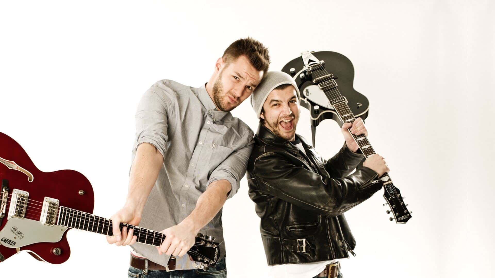

Pizzera & Jaus
Das wohl erfolgreichste österreichische Dialektmusik- und Kabarettduo, bestehend aus dem Kabarettisten Paul Pizzera (Gesang, Gitarre) und dem Schauspieler, Musiker und Kabarettisten Otto Jaus.

Das wohl erfolgreichste österreichische Dialektmusik- und Kabarettduo, bestehend aus dem Kabarettisten Paul Pizzera (Gesang, Gitarre) und dem Schauspieler, Musiker und Kabarettisten Otto Jaus.
Die neue Tour ist da! Pizzera & Jaus gehen 2026 wieder auf die Bühnen Österreichs und bringen ihre größten Hits und brandneue Songs zu euch. Eine Show voller Energie, Emotion und unverwechselbarem Dialekt-Pop.
Zweifelturm - 2025
Zirkusprinz - 2024
Comedian Rhapsody - 2022